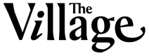
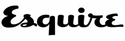
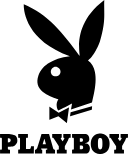
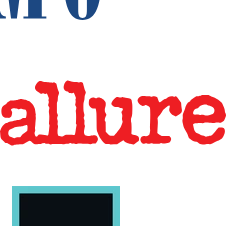
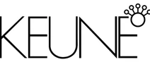

Мужской стилист · Барбер · Эксперт по мужскому уходу
Записаться Москва, Проспект Мира, 7, стр. 3 Telegram Instagram**Решением суда запрещена «деятельность компании Meta Platforms Inc. по реализации продуктов — социальных сетей Facebook и Instagram на территории Российской Федерации по основаниям осуществления экстремистской деятельности»
Герман Винокуров
Мужской стилист · Барбер ·
Эксперт по мужскому уходу ·
Основатель Barberherman & Co
Москва | Международные проекты

Профессиональный профиль
Герман Винокуров — мужской стилист, барбер и эксперт по мужскому уходу с более чем 15-летним профессиональным опытом в индустрии мужского стиля и grooming.
Свою карьеру начал в 2009 году после получения профильного профессионального образования в сфере парикмахерского искусства. За годы работы Герман сформировал сильный международный профиль, объединяющий grooming, fashion, образование и развитие брендов.
Является основателем и креативным директором Barberherman & Co — бренда мужского ухода, работающего по full-cycle модели и сочетающего услуги, обучение и розничное направление. Проект ориентирован на современную мужскую эстетику, высокие стандарты сервиса и осознанный подход к стилю.
Ключевая экспертиза
· Мужские стрижки
и создание индивидуального образа
· Барберинг и моделирование бороды
· Grooming и уход за собой для мужчин
· Обучение и наставничество
· Международные образовательные программы
· Консалтинг салонного бизнеса
· Fashion и медиа-проекты
Медиа и пресса





Наставничество и экспертиза
· Один из первых преподавателей школы барберов BarberWanted (Москва)
· Международный тренер и наставник
· Обучил более 1 000 начинающих и профессиональных мастеров
· Тренер и официальный партнёр бренда Keune Haircosmetics (Нидерланды)
· Проведение профессиональных тренингов и мастер-классов: Италия (Сицилия), Испания (Барселона)
· Участник европейского профессионального проекта «Каникулы парикмахеров»
Партнёрства и коллаборации


Fashion и события
· Участник Mercedes-Benz Fashion Week (Нью-Йорк)
· Grooming и мужской стиль для проектов с выпускниками New York Academy of Design
· Работа на закрытых и частных fashion-показах в Нью-Йорке
Бизнес-консалтинг и развитие салонов
· Открытие и операционное сопровождение салонов красоты и барбершопов: в регионах России и в странах СНГ
· Консалтинг в области формирования команд, стандартов сервиса, позиционирования бренда, обучения и развития персонала
© Герман Винокуров, 2026